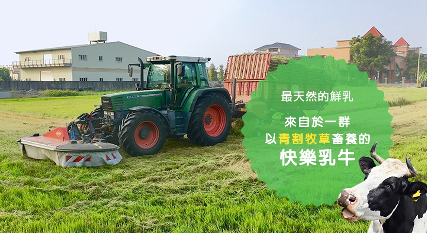
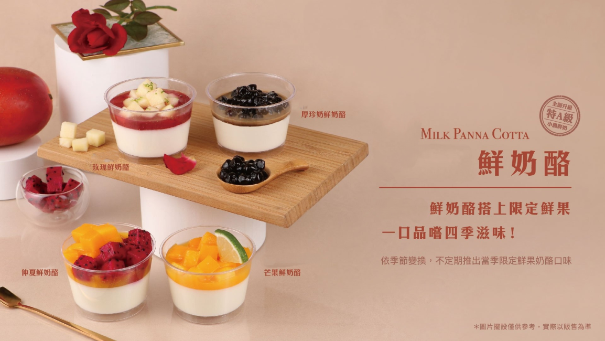

牛乳產地
地址： 504彰化縣秀水鄉彰鹿路72巷51號
主恩鮮奶秉持不斷精益求精，在鮮乳生產的環節裡，務求每個階段都要有嚴格的SOP；柯先生也不斷投資設備與牛隻，他購買大型自動化設備，建立完整的冷鏈(全程低溫控管)、親自到澳洲引進最佳狀態的乳牛，不斷提升鮮奶品質，所有的堅持，只為了讓消費者可以購買到最新鮮、最高品質的鮮奶。
牛奶送到店裡,店家加工
製作過程將鮮奶油、牛奶、砂糖混 合後，再加入香草籽一起加熱，最後加入已融化的吉 利丁等凝膠膠體後，放涼凝固即可完成。


客人手上
奶酪若退冰過，請當日食用完畢
保存天數：10天
須冷藏七度以下。 建議收到奶酪時先將手提盒蓋打開冷藏，以確保奶酪冷藏度足夠
口感隨溫度變化有些微不同，放置常溫勿超過半小時。
若有液化屬正常現象。請冷藏回復正常後食用，以確保最佳風味。